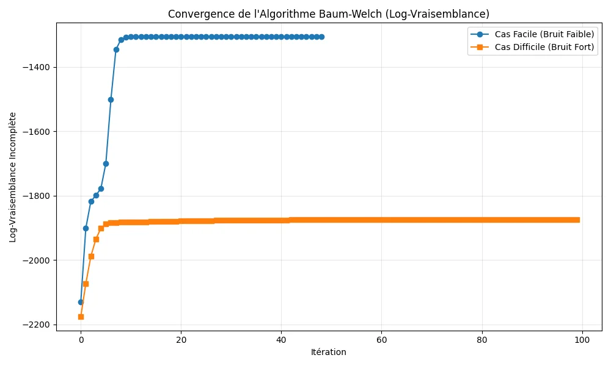
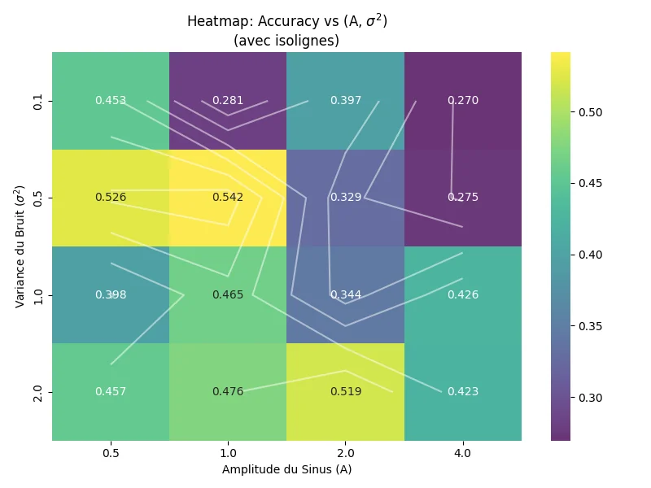

Projet personnel · Python · Numba · mars 2026
Modèles de Markov cachés
Un HMM à émissions gaussiennes écrit sans bibliothèque de HMM, pour retrouver des régimes cachés à partir de la seule série observée.
Le problème
Un marché alterne entre des phases (calme, tendance, forte volatilité) qu'on n'observe pas directement : on ne voit que la série des prix ou des rendements. Un modèle de Markov caché suppose que ces régimes suivent une chaîne de Markov et que chaque régime produit des observations selon sa propre loi.
Implémentation
- Forward-Backward pour les probabilités de chaque régime à chaque date.
- Baum-Welch (algorithme EM) pour apprendre sans supervision la matrice de transition, la distribution initiale et les paramètres gaussiens de chaque régime.
- Viterbi pour la séquence de régimes la plus probable.
- Les boucles critiques sont compilées avec Numba ; le code est découpé en modules (modèle, émissions, simulation, évaluation, visualisation).
Évaluation
Le modèle est testé sur des séries simulées à 3 régimes connus (une sinusoïde, une sigmoïde et une constante, chacune bruitée), avec une matrice de transition persistante. Les régimes estimés sont appariés aux vrais par l'algorithme hongrois, puis on mesure la part de dates correctement classées.


Résultats, honnêtement
L'algorithme converge, mais la précision du décodage reste modeste : entre 27 % et 54 % selon les paramètres, à comparer à environ 33 % pour un tirage au hasard parmi 3 régimes. La raison tient à la simulation elle-même : la moyenne de deux régimes varie dans le temps (sinusoïde, sigmoïde), alors que le HMM suppose une moyenne constante par régime, et la sinusoïde comme la constante ont une moyenne proche de zéro. Le modèle ne peut alors les distinguer que par leur variance.
Ce que j'en retire
Écrire Baum-Welch et Viterbi à la main, puis mesurer quand le décodage échoue, apprend les limites du modèle autant que son fonctionnement : un HMM n'est bon que si ses hypothèses d'émission collent aux données.
Pistes
- Simuler des régimes conformes aux hypothèses (moyenne et variance constantes par régime) pour valider l'implémentation seule.
- Appliquer le modèle aux rendements réels (AMZN, BNP Paribas) et comparer les régimes détectés aux périodes de stress connues.
- Utiliser des émissions plus riches (mélanges de gaussiennes, Student) pour les queues épaisses des rendements.